5. 编译仿真性能分析使用指南
名词解释
名词 |
说明 |
|---|---|
Knight |
清微骑士工具链英文名称 |
CGRA |
粗粒度可重构阵列处理器 |
RNE |
可重构神经网络加速引擎 |
FSPM |
CGRA芯片内部数据缓存 |
WSPM |
CGRA芯片权重数据缓存 |
MSPM |
CGRA芯片量化参数缓存 |
DDR |
CGRA芯片外部数据缓存 |
DMA |
直接存储器访问功能 |
RCCN |
可重构矩阵计算功能 |
RCVT |
可重构向量计算功能 |
RDMA |
读DMA功能 |
WDMA |
写DMA功能 |
5.1. 简介
本文档主要介绍清微骑士工具链 Knight 在模型编译、模拟和性能分析方面的功能及使用方法。内部涉及到的相关模块简介如下:
Knight编译器
Knight-Compiler:编译转换量化模型，产生芯片执行的指令配置文件。Knight模拟器
Knight-Simulator:用于仿真神经网络在芯片上推理计算过程，输出计算层的结果。Knight性能分析器
Knight-Profiling:用于分析神经网络在芯片上执行时间和存储开销，并给出分析报告。
5.2. 开发流程
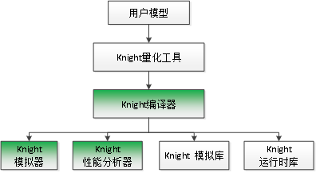
用户模型通过Knight量化工具得到网络量化模型。
使用Knight编译器编译网络量化模型，生成模拟器和芯片部署文件，分别包含指令文件和权重文件。
Knight模拟器加载模型部署文件，输出网络推理结果，用于功能验证。
Knight性能分析器加载模型部署文件，分析模型完成计算的时间，用于模型性能预估。
Knight模拟库供用户在PC端调用编写自己的应用程序，从而实现模拟运行结果。
Knight运行时库供用户在PC端交叉编译时调用，从而实现板端运行。
5.3. Knight编译器
5.3.1. 概述
Knight编译器用于加载量化模型，生成芯片配置指令文件和权重参数文件。
5.3.2. 编译步骤
编译步骤如下：
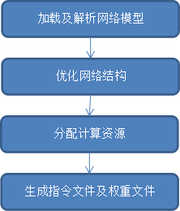
步骤说明
- 加载及解析网络模型
1.通常网络模型中的算子需要经过Knight量化工具量化后，Knight编译器才能识别并正常编译，部分算子除外。
2.识别格式是protobuf定义的特定文件格式。
- 优化网络结构
1.层合并：例如Convolution+BN。
2.层替换：例如某些层可以通过卷积替换提高硬件的计算效率。
3.层分割：例如限于硬件资源，某些层需要按照channel划分为多次计算。
- 分配计算资源
基于硬件的存储资源及网络结构分配地址信息。
- 生成指令文件及权重文件
1.生成带有调试信息的指令及权重。
2.生成不带调试信息的指令及权重。
5.3.3. 使用说明
5.3.3.1. 命令格式
caffe模型：
Knight --chip [chiptype] compile* --net example.prototxt
--weight example.caffemodel --save-dir ./example/
onnx模型：
Knight --chip [chiptype] compile* --onnx example.onnx --save-dir ./example/
5.3.3.2. 参数说明
- --net
格式: –net net_file
说明：编译caffe模型的必要参数。设定神经网络模型文件路径。
- –weight或-w
格式: –weight weight_file或-w weight_file
说明：编译caffe模型的必要参数。设定神经网络权重文件路径。
- --save-dir
格式: –save-dir save_dir
可选
默认值：无
说明：设置输出文件路径，默认为
/TS-KnightOutput/Compile路径。
- –log-level或 -l
格式: –log-level {0,1,2,3} 或 -l {0,1,2,3}
可选
默认值：3
说明：设定log输出等级，默认为3。0=DEBUG 1=INFO 2=WARNING 3=ERROR
- --onceload-m
格式: –onceload-m mspm_offs
可选
默认值：-1，不使用onceload-m。
说明：按照一次性载入权重的网络格式编译芯片配置文件时，量化参数的偏移值。 mspm_offs为MSPM空间的偏移。若多个模型使用onceload-m，则第一个模型指定mspm_offs为0，后面依次加上前一个模型end值（编译log里会有类似MSPM once load end:xxx的提示）。 不同芯片类型，参数的取值范围也不同，详见3.3.3 部分参数详细说明。
- --onceload-w
格式: –onceload-w wspm_offs
可选
默认值：-1，不使用onceload-w。
说明：按照一次性载入权重的网络格式编译芯片配置文件时，权重的偏移值。 wspm_offs为WSPM空间的偏移。若多个模型使用onceload-w，则第一个指定wspm_offs为0，后面依次加上前一个模型end值（编译log里会有类似WSPM once load end:xxx 的提示）。 不同芯片类型，参数的取值范围也不同，详见3.3.3 部分参数详细说明。
- --output
格式: –output blob_name
可选
默认值：NULL
说明：指明需要导出的blob_name。参数blob_name是在模拟器仿真d版本的cfg和weight配置时输出的blob_name。
Note
1)设置该参数确保某一个layer的输出blob在计算结束时是作为网络结果输出。
2)设置-l 0编译时，在npu_compile_xxx.log文件中可以看到所有可设置的blob_name列表。
3)多输出场景，需要多次使用–output参数，每次指定一个blob_name。如：–output blob_1 –output blob_2
设置–output参数出现blob_name错误原因和解决方法见 如何正确设置编译器–output参数值？
- –general-process或-gp
格式: –general-process或-gp
可选
默认值：关闭。
说明：设置该参数时，打开自编译通用类型算子的开关。打开状态时，遇到不识别的算子自动编译成通用类型算子。关闭状态时，遇到不识别的算子报error。
Note
不识别的算子，是指除了规格表中定义的算子（包含高效类型算子和通用类型算子）之外的算子
- --opt-ddr
格式: –opt-ddr {0,1,2}
可选
默认值：1
说明：可选参数。指示是否对ddr做优化。 0：算子使用的ddr缓存地址没有重叠，支持模拟器debug中间层输出功能，使用的ddr缓存较大。 1：算子使用的ddr缓存地址会有重叠，使用ddr缓存相对较小。 2：算子使用的ddr缓存地址会有重叠，不支持模拟器debug中间层输出功能，使用ddr缓存更小。
Note
如果使用Knight模拟器的–debug参数调试网络， 只能使用–opt-ddr 0。
- --debug
格式: –debug
可选
默认值：关闭。
说明：设置该参数时，打开编译输出xxx_d.tsmodel文件的开关。 关闭状态时：编译不输出xxx_d. tsmodel文件。 打开状态时：编译输出xxx_d. tsmodel文件。
- --unfixloop
格式: –unfixloop
可选
默认值：关闭。
- 说明：
- 设置该参数时，编译循环神经网络为不定循环次数的网络。
此参数控制是否编译循环神经网络为不定循环次数的网络。如果设置该参数，开启不定循环次数编译，编译器会做相应处理，对应保存的数据的中间数据缓存在执行时不会被清零。
配合Knight模拟器的-fs，-fc使用。
- --sparse
格式: –sparse
可选
默认值：关闭。
说明：设置该参数时，打开权重稀疏化压缩的开关。部分芯片支持，详见3.3.3 部分参数详细说明
- --res-version
格式: –res-version ver_string
可选
默认值：1.0
说明：配置资源版本号。配置的资源版本号编译到cfg文件中，用于模拟库和板端部署模型查询。最多支持配置16个字符。
- --onnx
格式: –onnx onnx_file
可选
说明：编译onnx模型的必选参数。设定onnx神经网络模型文件路径。
- --res-version
格式: –res-version ver_string
可选
默认值：1.0
说明：配置资源版本号。配置的资源版本号编译到cfg文件中，用于模拟库和板端部署模型查询。最多支持配置16个字符。
- --opt-group
格式: –opt-group {0,1,2}
可选
默认值：0
- 说明：此参数设置网络组优化策略。
0: 不使用网络组优化。
1: 使用内部融合处理算法进行优化。
2: 使用遗传算法进行优化。
不支持循环网络
- --input-indep
格式: –input-indep
可选
默认值：关闭
说明：
设置该参数时，打开input blobs mem是否独立于blobs mem的开关。后续推理流程支持SDK与模拟器。
关闭状态时：input blobs mem 在blobs mem 里面，由SDK分配控制。
打开状态时：input blobs mem 在blobs mem 外面，模型每个input blob所需内存由用户分配控制，SDK调用时将RNE_BLOB_S的vpAddr指针指向该内存（用户通过TS_MPI_TRP_RNE_GetInputBlobs获取vpAddr指针直接赋值实现；或通过TS_MPI_TRP_RNE_SetInputBlobsAddr接口实现）。RNE推理时不会覆盖此内存。用户可将前处理后的定点input data按HWCStride格式直接放入此内存，data数据为8bit或16bit的整型数(与输入层量化位宽对应)，此时可以提高整个应用的性能。用户也可以通过TS_MPI_TRP_RNE_FillInputBlobs接口将input data放入此内存，此时无性能提升。 详见参数说明流程图
Note
除TX510x外，其他芯片都支持该参数； Input后接通用算子时，不支持该参数。
- –hardware-resource-mode或-hrm
格式: –hardware-resource-mode {“little”,”middle”, “big”, “super”} 或 -hrm {“little”,”middle”, “big”, “super”}
可选
默认值：super
说明：此参数控制用户可使用的硬件资源大小，包括FSPM，MSPM，WSPM等。指定为little模式编译不过时，可使用big或super模式。 little：只能使用最少的硬件资源。 middle：与little模式相比，使用较多的硬件资源。 big：与middle模式相比，使用较多的硬件资源。。 super：使用全部硬件资源
Note
目前只有TX5336x_TX5256x芯片支持该参数。
- –start-layer-name或-sln
格式:–start-layer-name start_layer_name 或 -sln start_layer_name
可选
默认值：1.0
说明：支持编译ONNX模型的子网络，该参数指定子网络的起始layer。通常情况下，此参数与-eln同时使用。当原始的ONNX模型只有一个输入时，该参数可忽略，默认编译从原始模型的输入开始到-eln指定layer结束
Note
1）不支持input或cast作为参数值
2）卷积类算子会被量化为（GEMM/Conv/Deconv) + BN算子组合。在这种情况下，BN层名不能作为参数值。
3）GlobalAveragePooling或AveragePooling被量化为pooling + PyOp算子组合，PyOp层名不能作为参数值。
4）当算子有多个输入时，层名不能作为参数值。
详细说明见 编译器设置-sln/-eln注意事项
- –end-layer-name或-eln
格式:–end-layer-name end_layer_name 或 -eln end_layer_name
可选
默认值：编译从-sln指定layer开始到模型结束
说明：支持编译ONNX模型的子网络，该参数指定子网络的结束layer。通常情况下，此参数与-sln同时使用。 当原始的ONNX模型只有一个输出时，该参数可忽略。
Note
1）卷积类算子会被量化为（GEMM/Conv/Deconv) + BN算子组合。在这种情况下，卷积(GEMM/Conv/Deconv) 层名不能作为参数值。
2）GlobalAveragePooling或AveragePooling被量化为pooling + PyOp算子组合，pooling层名不能作为参数值。
3）当算子有多个输出时，层名不能作为参数值。
详细说明见 编译器设置-sln/-eln注意事项
- --input-order
格式:–input-order {nchw,nhwc}
可选
默认值：nchw
说明：指定模型输入节点数据排布顺序，部分网络由于数据排布顺序问题导致编译失败问题，使用该参数指定不同的输入数据排布顺序，可正常编译通过。
- --output-indep
格式:–output-indep
可选
默认值：关闭
- 说明：
设置该参数时，打开output blobs mem是否独立于blobs mem的开关。后续推理流程支持SDK与模拟器。
关闭状态时：output blobs mem 在blobs mem 里面，由SDK分配控制。
打开状态时：output blobs mem 在blobs mem 外面，模型每个output blob所需内存由用户分配控制，SDK调用时将RNE_BLOB_S的vpAddr指针指向该内存（用户通过TS_MPI_TRP_RNE_GetOutputBlobs获取vpAddr指针直接赋值实现；或通过TS_MPI_TRP_RNE_SetOutputBlobsAddr接口实现）。推理时不会覆盖此内存。用户也可以通过TS_MPI_TRP_RNE_DumpOutputBlobs接口将output data放入此内存，此时无性能提升。
详见参数说明流程图
- --transformer-opt
格式:–transformer-opt
可选
默认值：关闭
说明： 设置该参数时，将连续多个reshape、permute或连续多个reshape或连续多个permute算子合并为算子（gather或move）。 关闭状态时：关闭该优化。
打开状态时：打开算子合并。
参数使用场景见 编译器–transformer-opt使用场景？
- --rgb
格式:–rgb
可选
默认值：关闭
说明：设置该参数时，编译的模型接受RGB 3通道数据输入。该选项打开后，输入文件大小受芯片FSPM存储大小限制。
- –run-config或-rc
格式:–run-config config_file
可选
说明：命令行配置文件路径。将上述命令行选项写到一个json文件中传给compile工具。命令行参数的优先级高于配置文件中的对应项。请参考 使用指南综述 的–run-config参数说明。。
5.3.3.3. 部分参数详细说明
部分参数只支持特定芯片，详情见下表(Y：支持 N：不支持)
参数 |
TX510x |
TX5368x_TX5339x_TX5335x |
TX5215x_TX5239x200_TX5239x220_TX5239x300 |
TX5112x_TX5239x201 |
TX5336x_TX5256x |
|---|---|---|---|---|---|
–unfixloop |
N |
Y |
Y |
Y |
Y |
–sparse |
N |
Y |
N |
N |
Y |
–input-indep |
N |
Y |
Y |
Y |
Y |
–hardware-resource-mode |
N |
N |
N |
N |
Y |
–start-layer-name |
N |
Y |
Y |
Y |
Y |
–end-layer-name |
N |
Y |
Y |
Y |
Y |
—input-order |
N |
Y |
N |
N |
Y |
–output-indep |
N |
N |
N |
N |
Y |
–transformer-opt |
N |
Y |
N |
N |
Y |
部分参数在不同芯片中的使用有差异，差异如下
- TX510x芯片
- --onceload-m
1.mspm end值计算：(mspm_offs + 127)/128*128 + mweight size。
2.如果输入的mspm_offs值不是128字节对齐，编译器会将mspm_offs对齐到128字节。
3.参数取值范围为：0 <= (mspm_offs + 127)/128*128 <= 8KB-mweight size。由于LUT层在TX510系列芯片硬件上必须占用MSPM的最后一个bank，所以网络里面有LUT层时暂时不能支持mspm_offs > 0。
- --onceload-w
1.wspm end值计算：(wspm_offs + 255)/256*256 + wweight大小。
2.如果输入的wspm_offs值不是256字节对齐，编译器会将wspm_offs对齐到256字节。
3.参数的取值范围为：0 <= (wspm_offs + 255)/256*256 <= 144KB-wweight size
- TX5368x_TX5339x_TX5335x芯片
- --onceload-m
1.mspm end值计算：(mspm_offs + 255)/ 256*256 + mweight大小。
2.如果输入的mspm_offs值不是256字节对齐，编译器会将mspm_offs对齐到256字节。
3.编译输出的mweight文件为256字节对齐。
4.参数取值范围为：0<= (mspm_offs + 255)/256*256 <= 16KB-mweight size
- --onceload-w
1.wspm end值计算：(wspm_offs + 511)/ 512*512+ wweight大小。 2.如果输入的wspm_offs值不是512字节对齐，编译器会将wspm_offs对齐到512字节。
3.编译输出的wweight文件为256字节对齐。
4.参数的取值范围为：0<= (wspm_offs + 511)/ 512*512<= 288KB-wweight size
- --sparse
- 权重稀疏化压缩生效的条件：
1.Conv/innerproduct。
2.权重是8bit。
3.权重在稀疏化压缩时有正收益。
4.kernel_h <= 8 && kernel_w < =8。
5.特殊情况，Ci和kernel_w满足Ci>=1&&Ci<=4且kernel_w >= 3 &&kernel_w < =8时，不做稀疏化。
6.Ci方向满足连续32个为0，会被稀疏化，为一个稀疏化块（每32个Ci方向为一块）。如Ci为64，C0-C31为0或C32-C64为0。实际Ci小于32，连续Ci个为0即满足Ci方向稀疏化。
Co方向满足连续64个filter有相同的稀疏化块。Co小于64，实际Co满足即可。
- TX5215x_TX5239x200_TX5239x220_TX5239x300芯片
- --onceload-m
1.mspm end值计算： (mspm_offs+127)/ 128*128+ mweight大小。
2.如果输入的mspm_offs值不是128字节对齐，编译器会将mspm_offs对齐到128字节。
3.编译输出的mweight文件为128字节对齐。
4.参数取值范围为0 <= (mspm_offs + 127)/128*128 <= 8KB-mweight size
- --onceload-w
1.wspm end值计算：(wspm_offs + 127)/128*128+ wweight大小。
2.如果输入的wspm_offs值不是128字节对齐，编译器会将wspm_offs对齐到128字节。
3.编译输出的wweight文件为64字节对齐。
4.参数取值范围为：0 <= (wspm_offs + 127)/128*128<= 72KB-wweight size。
- TX5112x_TX5239x201芯片
- --onceload-m
1.mspm end值计算：(mspm_offs + 127)/ 128*128 + mweight大小。
2.如果输入的mspm_offs值不是128字节对齐，编译器会将mspm_offs对齐到128字节。
3.编译输出的mweight文件为128字节对齐。
4.参数取值范围为：0 <= (mspm_offs + 127)/128*128 <= 8KB-mweight size。
- --onceload-w
1.wspm end值计算：(wspm_offs + 63)/64*64 + wweight大小。
2.如果输入的wspm_offs值不是64字节对齐，编译器会将wspm_offs对齐到64字节。
3.编译输出的wweight文件为64字节对齐。
4.参数取值范围为：0 <= (wspm_offs + 63)/64*64 <= 36KB-wweight size。
- TX5336x_TX5256x芯片
- --onceload-m
1.mspm end值计算：(mspm_offs + 255)/ 256*256+ mweight大小。
2.如果输入的mspm_offs值不是256字节对齐，编译器会将mspm_offs对齐到256字节。
3.编译输出的mweight文件为256字节对齐。
4.参数取值范围为：0<= (mspm_offs + 255)/256*256 <= 16KB-mweight size
- --onceload-w
1.wspm end值计算：(wspm_offs + 511)/ 512*512+ wweight大小。
2.如果输入的wspm_offs值不是512字节对齐，编译器会将wspm_offs对齐到512字节。
3.编译输出的wweight文件为256字节对齐。
4.参数的取值范围为：0<= (wspm_offs + 511)/ 512*512<= 288KB-wweight size
- --sparse
权重稀疏化压缩生效的条件：
1.Conv/innerproduct。
2.权重在稀疏化压缩时有正收益。
3.kernel_h <= 8 && kernel_w < =8。
4.stride_w >=1 && stride_w <=2。
- 5.特殊情况，Ci和kernel_w满足以下任一条件，不做稀疏化
1）Ci>=1&&Ci<=4且kernel_w >= 3 &&kernel_w < =8
2）Ci>4&&Ci<=8且kernel_w >= 2 &&kernel_w < =4。
6.Ci方向满足连续32个为0，会被稀疏化，为一个稀疏化块（每32个Ci方向为一块）。如Ci为64，C0-C31为0或C32-C64为0。实际Ci小于32，连续Ci个为0即满足Ci方向稀疏化。
- 7.支持8bit和16bit权重。
1)8bit：Co方向满足连续64个filter有相同的稀疏化块。Co小于64，实际Co满足即可。 2)16bit：Co方向满足连续32个filter有相同的稀疏化块。Co小于32，实际Co满足即可。
–input-indep参数说明流程图
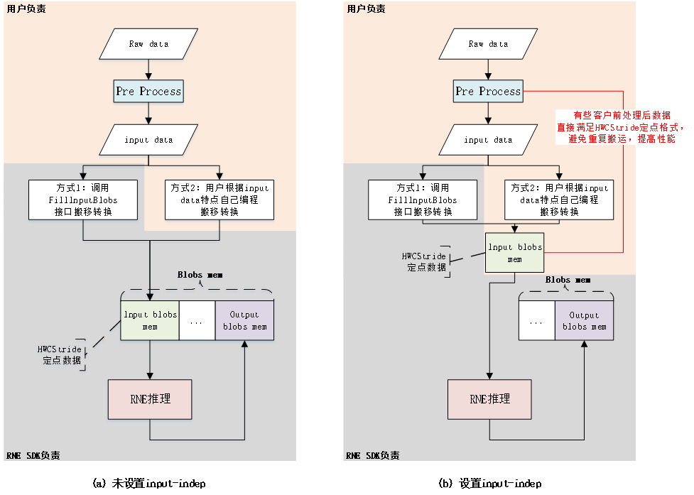
5.3.3.4. 输出文件
文件 |
说明 |
|---|---|
* _r.tsmodel |
模拟器指令和权重部署文件，用于模拟器仿真。 |
* _d.tsmodel |
模 拟器指令和权重部署文件，带有调试信息，用于模拟器仿真。 |
*_r.cfg |
（即将废弃） 芯片指令部署文件，不带有调试信息。用于芯片加载初始化。 |
*_r.weight |
（即将废弃）芯片权重 部署文件，包含模型权重和量化参数，用于芯片加载初始化。 |
log /npu_compi le_yyy ymmdd.log |
log 文件（yyyymmdd表示日志生成的日期，如20221011）。 |
Note
注意： *代表输入网络的basename（文件名中去除目录和扩展名的部分）。
5.3.3.5. ErrorCode
代 码 |
说明 |
|---|---|
0001 |
读文件错误。 |
0002 |
写文件错误。 |
0003 |
权重排列错误。 |
0004 |
网络配置错误。 |
0005 |
编译网络时出现逻辑错误。 |
0006 |
启动参数配置错误。 |
0007 |
该层需要占用的缓存太大，无法编译。 表示编 译器编译处理某一层算子时所需fspm缓存太大，超过硬件规格限制。 详细内存分配使用，可打开INFO级别的日志查看。 |
0008 |
芯片指令生成错误。 |
0009 |
数据索引超出应有范围。 |
5.4. Knight RNE模拟器
5.4.1. 概述
模拟器工具的主旨是通过Linux PC软件模拟硬件的运行情况，根据编译器生成的网络指令部署文件和网络权重部署文件，进行网络推理与功能验证。
模拟器的原理是模拟硬件算子的处理，根据指令数据决定算子的组合，每个算子根据输入数据、权重数据、量化数据进行数据处理，从而实现整个网络的推理。
模拟器目前支持多帧输入，支持输入nhwc/nchw/nhwcstride格式转换、支持查看最终推理结果输出和每层结果输出，支持查看网络推理前的输入数据等。
5.4.2. 使用说明
5.4.2.1. 命令格式
# config&&weight
Knight --chip [chiptype] rne-sim --input* example\ *.input*
--config example.cfg --weight example.weight --save-dir ./example/
# tsmodel:
Knight --chip [chiptype] rne-sim --input* example\ *.input
--model example.tsmodel --save-dir* ./example/
5.4.2.2. 参数说明
- –help或-h
格式:–help或 -h
可选
说明：显示帮助信息。
- –input或-i
格式:–input input_file或-i input_file
可选
- 说明：
- 网络输入数据，数据格式是整型或浮点类型bit流格式。
对于有多个输入的网络模型，把输入数据按照网络输入顺序合并放入一个总二进制文件中， 或者按顺序放入多个二进制文件中，格式为”input_file1:input_file2:…”或”input_file1,input_file2,…”。
- –format或 -fmt
格式:–format {nchw,nhwc,nhwcstride}或-fmt {nchw,nhwc,nhwcstride}
可选
默认值：nhwc
说明： 取值范围：nchw|nhwc|nhwcstride 输入数据为(n,h,w,c)格式时可以不指定该参数。 输入数据为(n,c,h,w)格式时需要指定参数：–format nchw。 输入数据为(n,h,w,cstride)格式时需要指定参数：–format nhwcstride，cstride通过编译器指定-l = 1获取， info级别日志会打印”The cstride value of input{idx}: {cstride_value}”。
- –model或-m
格式:–model model_file或 -m model_file
说明：模拟器指令权重合一部署文件，编译工具Knight RNE编译器输出（*_r.tsmodel或*_d.tsmodel）
- –weight或 -w
格式:–weight weight_file或 -w weight_file
说明：模拟器权重部署文件，编译工具Knight RNE编译器输出（*_r.weight或*_d.weight）。
- –config 或 -cfg
格式:–config config_file或 -cfg config_file
说明：模拟器指令部署文件，编译工具Knight RNE编译器输出（*_r.cfg或*_d.cfg）。
- –debug 或 -d
格式:–debug layer_name 或 -d layer_name或–debug xxx.json 或 -d xxx.json
可选
默认值：null
说明：layer_name: 网络层名字，可以在编译器指定log为0生成的npu_compile_xxx.log文件中查看所有layer_name。指定layer_name后运行模拟器，会输出该层的结果文件。
xxx.json: 量化生成的json文件，该文件中包含一个或多个由算子类型、算子名称和算子输出组成的信息，格式如下所示：
[
{
"op_type": "Conv",
"op_name": "conv1_scaleFix",
"op_output_name": "sc1_decupled"
}
]，
op_name同layer_name。
传参时不支持同时传入layer_name和xxx.json文件，且只能传入一个xxx.json文件。若遇到不存在的layer_name，会输出警告信息，继续debug下一层。
使用–debug参数时，需要使用*_d.cfg和*_d.weight。
设置为all时自动输出全部layer的数据。 调试层为没有量化的层时，该层的结果文件类型由下一层的输入类型决定。
- –log-level 或 -l
格式:–log-level {0,1,2,3} 或 -l {0,1,2,3}
可选
说明：默认值设定log输出等级. 0=DEBUG 1=INFO 2=WARNING 3=ERROR
- --save-dir
格式:–save-dir output_path
可选
默认值：/TS-KnightOutput/RneSim
说明：设置输出文件路径。
- –frame-step 或 -fs
格式:–frame-step frame_step 或 -fs frame_step
可选
默认值：0
说明：帧移。
只有在fc>1的情况下，该值才有实际意义（即帧移在第二帧开始生效）。
多帧模式（fc>1）：模拟器会把输入数据按照帧移一帧一帧计算到输入数据，剩余数据不足一帧情况的舍弃计算。
在有多个网络输入数据的网络中，允许多网络输入数据有不同帧移，以“帧移1:帧移2:…”或“帧移1,帧移2,…”格式输入，输入帧移个数可以为1个或者与网络需要输入个数相同，其他均为错误输入。
- –frame-count或 -fc
格式:–frame-count frame_count 或 -fc frame_count
可选
默认值：1（单帧）
说明：帧数。
多帧模式有效（fc>1）, 表示多帧模式下计算的帧数。 设置该值时，程序会自动计算至输入数据的帧移数，剩余数据不足一帧的情况则舍弃计算。实际运行的帧数为最大可运行帧数和输入帧数的最小值。
- –intofile 或 -if
格式:–intofile size 或 -if size
可选
默认值：0
说明：
类型为 int 将网络输入数据按照各路输入顺序存储到文本文件(intofile.txt)。 -1:存储指定帧数组数据，每组数据包含完整一帧大小的各路输入数据； 0：关闭，不保存数据到文本文件； >=1：存储指定帧数组数据，每组数据包含各路输入m个数据，m为 size 和一帧数据大小的最小值。
- –run-config或-rc
格式:–run-config <config文件路径> 或者 -rc <config文件路径>
可选
说明：命令行配置文件路径。将上述命令行选项写到一个json文件中传给simulator工具。命令行参数的优先级高于配置文件中的对应项。
5.4.2.3. 输出文件
文件 |
内容 |
说明 |
|---|---|---|
result- layer_name-bl ob_name_p.txt |
中间层的输出 （十进制） 数据顺序: CHW |
设定的输出层的数据。 例如：调用Knight RNE模拟 器时参数–debug是fc1，fc1的output blob name是fc1 _output。则生成十进制表示的输出文 件：result-fc1-fc1_output_p.txt。 |
result-laye r_name-blob_n ame_hwc_p.txt |
中间层的输出 （十进制） 数据顺序：HWC |
设定的输出层的数据。 例如：调用Knight RNE模拟 器时参数–debug是fc1，fc1的output blob name是fc1_output。 则生成十进制表示的输出文件： result-fc1-fc1_output_hwc_p.txt。 |
result-blobn ame_hwc_p.txt |
网络结果输出 （十进制） 数据顺序：HWC |
调用Knight R NE模拟器时不设定参数–debug，则生 成整个网络的输出结果的十进制表示 的文件result-blobname_hwc_p.txt。 |
result-b lobname_p.txt |
网络结果输出 （十进制） 数据顺序：CHW |
调用Knight RNE模拟器时不设定参数–debug， 则生成整个网络的输出结果的十进制 表示的文件result-blobname_p.txt。 |
npu_sim _yyyymmdd.log |
log文件 |
log 文件（yyyymmdd表 示日志生成的日期，如20221011）。 |
intofile.txt |
网络输 入数据根据输入b lobs类型直接存储 |
保存网络输入数据的文本文件。 |
5.5. Knight RNE性能分析器
5.5.1. 概述
性能分析器工具的主旨是通过Linux PC软件模拟硬件的运行情况，根据编译器生成的网络指令部署文件和网络权重部署文件，进行网络耗时估计。
Knight RNE性能分析器的原理是模拟硬件算子的处理，根据指令数据决定算子的组合， 每个算子根据输入数据、权重数据、量化数据进行数据处理耗时分析，从而实现网络的耗时分析。
5.5.2. 使用说明
5.5.2.1. 命令格式
#config&weight
Knight --chip [chiptype] rne-profiling* --config example.cfg
--weight example.weight --save-dir ./example/
#tsmodel
Knight --chip [chiptype] rne-profiling* --model example.tsmodel
--save-sir ./example/
5.5.2.2. 参数说明
- –help或-h
格式:–help或 -h
可选
说明：显示帮助信息。
- –model或-m
格式:–model model_file或 -m model_file
说明：模拟器指令权重合一部署文件，编译工具Knight RNE编译器输出（*_r.tsmodel或*_d.tsmodel）. TX510X不使用此参数，weight和cfg是必选，其他芯片使用cfg/weight或者tsmodel。
- –weight或 -w
格式:–weight weight_file或 -w weight_file
说明：模拟器权重部署文件，编译工具Knight RNE编译器输出（*_r.weight或*_d.weight）。TX510X为必选参数，其他芯片不需要此参数。
- –config 或 -cfg
格式:–config config_file或 -cfg config_file
说明：模拟器指令部署文件，编译工具Knight RNE编译器输出（*_r.cfg或*_d.cfg）。
- –log-level 或 -l
格式:–log-level {0,1,2,3} 或 -l {0,1,2,3}
可选
默认值设定log输出等级. 0=DEBUG 1=INFO 2=WARNING 3=ERROR
- –max-storage-bandwidth 或 -mbw
格式:–max-storage-bandwidth mbw_value 或 -mbw mbw_value
可选
- 说明：设置最大存储带宽，单位GB/s。
当设置为0时，按默认值处理。 不同芯片类型，默认值及取值范围也不同，详见5.2.3. 部分参数详细说明。
- --bandwidth-utilization
或 -bu - 格式:–bandwidth-utilization bu_value 或 -bu bu_value - 可选 - 默认值：1.00 - 说明：设置带宽占用率，取值范围：0~1.00。
- --save-dir
格式:–save-dir output_path
可选
默认值：/TS-KnightOutput/RneSim
说明：设置输出文件路径。
- –run-config或-rc
格式:–run-config <config文件路径> 或者 -rc <config文件路径>
可选
说明：命令行配置文件路径。将上述命令行选项写到一个json文件中传给simulator工具。命令行参数的优先级高于配置文件中的对应项。
5.5.2.3. 部分参数详细说明
max-storage-bandwidth差异如下
芯片 |
取值有意 义范围（单位GB/s） |
默认值（单位GB/s） |
|---|---|---|
TX510x |
0 ~ 5.960464 |
5.960464 |
T X5368x_TX5339x_TX5335x |
0 ~ 11.920929 |
11.920929 |
TX5215x_TX5239x200 _TX5239x220_TX5239x300 |
0 ~ 2.980232 |
2.980232 |
TX5119x_TX5112x200 |
0 ~ 1.490116 |
1.490116 |
TX5112x_TX5239x201 |
0 ~ 2.980232 |
2.980232 |
TX5336x_TX5256x |
0 ~ 11.920929 |
11.920929 |
5.5.2.4. 输出文件
文件 |
内容 |
说明 |
|---|---|---|
layer_cyc les_NPU_0.txt |
性能输出文件 |
打印性能信息。 |
npu_p rofiling_* yyyymmdd*.log |
log文件 |
log 文件（yyyymmdd表 示日志生成的日期，如20221011）。 |
性能输出文件内容（此处以芯片TX5368x_TX5339x_TX5335x为例）：
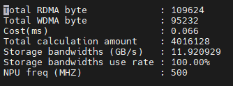
字段 |
说明 |
|---|---|
Total RDMA byte |
从DMA读数据总字节数。 |
Total WDMA byte |
向DMA写数据总字节数。 |
Cost (ms) |
预估的运行时间，单位：ms。 |
Total calculation amout |
总计算数。 |
Storage bandwidths (GB/s) |
片上缓存最大带宽，单位：GB/s。 |
Storage bandwidths use rate |
片上缓存带宽利用率。真实缓存带宽为Storage bandwidths*Storage bandwidths use rate。 |
NPU freq (MHZ) |
NPU频率，单位：MHZ。 |
性能分析器运行_d资源时，会在layer_cycles_NPU_0.txt中打印出每一层的运行时间，如下图所示：
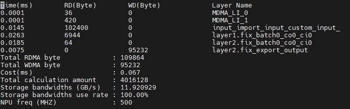
Note
注意：Profiling不计算通用算子层的时间和网络中RoundClip层的时间。
5.6. 支持算子列表
请参考 算子支持列表
5.7. 自定义算子
- Knight工具链中支持的算子有三类：
高效算子：运行在硬件单元上，执行效率高；
通用算子：运行在CPU等通用计算硬件单元上，执行效率相比于高效算子低，用户模型中经常使用且硬件单元不支持，Knight工具链出厂时已支持；
用户自定义算子：运行在CPU等通用计算硬件单元上，执行效率相比于高效算子低，用户自定义开发，除上述两类算子外用户模型中不支持的算子；
各芯片支持的高效算子、通用算子请参见相应芯片的 算子支持列表 。
Note
注意：Knight模拟器不支持用户自定义算子，Knight性能分析器仅统计高效算子资源。自定义算子不支持多batch。
5.7.1. 自定义算子流程
5.7.2. 定义自定义算子
自定义算子需要修改量化后的prototxt文件。
Note
注意。具体其他字段如下（注意：字段名字不能修改，不能扩展；自定义算子的prototxt用Knight RNE编译器编译时需要加选项-gp 1）。
layer {
name: "userfunc1"
type: "UserFunc1"
bottom: "data"
top: "userfunc1"
ts_rce_layer{
layer_type: 1152
top_channel: 4
top_width: 1
top_height: 1
rce_param: 1024
rce_param: 2048
}
fix_param {
input_bit: "s8"
output_bit: "s8"
}
}
字段 |
说明 |
是否 必选 |
|---|---|---|
name |
层名称。在当前网络中不可以重复。 |
是 |
type |
层类型。不可以与 算子列表中定义的高效算子层的层类型相同。 |
是 |
bottom |
Bottom 层名称，在网络中必须可以找到对应的top 层名称。 |
是 |
top |
Top 层名称，不可以与其他层的top 层名称相同。 |
是 |
ts_rce_l ayer.layer_type |
层类型。 0~1023：为高效算子层类型使用。 1024~1151：保留内部使用。 1152及以上：用户自定义的算子层使用。 基于SDK开发算例时，需要根据该值调用 TS_MPI_TRP_RNE_RegisterGpLayer 注册该类型所需要调用的算法函数。 例如： TS_MPI_TRP_RNE_RegisterGpLayer (1152, TS_MPI_TRP_RNE_GpLayerCustormOperator) |
是 |
ts_rce_la yer.top_channel |
输出channel。 在当前网络中。该层输出cha nnel。如果不设置该值，则自动使用该层输入 channel。 |
可选 |
ts_rce_l ayer.top_height |
输出height。 在当前网络中。该层输出he ight。如果不设置该值，则自动使用该层输入 height。 |
可选 |
ts_rce_ layer.top_width |
输出width。 在当前网络中。该层输出w idth。如果不设置该值，则自动使用该层输入 width。 |
可选 |
ts_rce_ layer.rce_param |
rce_param是float类型的数组，存放 用户传入到自定义计算中的参数，如scale。 |
可选 |
fix_ param.input_bit |
输入数据类型。 支持标记包括： s8 —8bit有符号数 us8 —8bit无符号数 s16 —16bit有符号数 s32 —32bit有符号数 s64 —64bit有符号数 注 ：如果上一层已经设置了output_bit，该值可 以不设置，输入符号位与上一层输出一致。 |
可选 |
fix_p aram.output_bit |
输出数据类型。 支持标记包括： s8 —8bit有符号数 us8 —8bit无符号数 s16 —16bit有符号数 s32 —32bit有符号数 注 ：不设置该值时表示输出float32浮点数。 |
可选 |
5.7.3. 自定义算子函数
该接口使用方式可参考 SDK使用指南 章节TS_MPI_TRP_RNE_GpLayerHandler介绍.
TS_VOID TS_MPI_TRP_RNE_GpLayerHandler(RNE_BLOBS_S *input, RNE_BLOBS_S *output,
RNE_BIN_DATA_S *extraData, TS_VOID *userData);
5.7.4. 注册自定义算子函数
层类型必须通过枚举的方式传递给注册函数，且最后一层必须为RNE_LAYER_TYPE_MAX_LAYER_TYPE。注册前须通过TS_MPI_TRP_RNE_InitGpLayerNum初始化通用算子层。TS_MPI_TRP_RNE_OpenDevice第二个参数需要传入TS_MPI_TRP_RNE_RegisterGpLayers。
此示例参考 open_source/gp_layers。用户如果需要传权重，可通过userData参数传入。
参考 ts_rne_gp_layer.h
// 定义枚举
typedef enum tsRNE_LAYER_TYPE {
RNE_LAYER_TYPE_START_LAYER = 1024,
RNE_LAYER_TYPE_CUSTOM_OPERATOR_LAYER = 1152,
RNE_LAYER_TYPE_MAX_LAYER_TYPE
} RNE_LAYER_TYPE;
参考ts_rne_gp_layer.c
// 注册软件层
TS_S32 TS_MPI_TRP_RNE_RegisterGpLayers(TS_VOID) {
TS_S32 ret = TS_MPI_TRP_RNE_InitGpLayerNum(RNE_LAYER_TYPE_MAX_LAYER_TYPE, RNE_LAYER_TYPE_START_LAYER);
ret |=TS_MPI_TRP_RNE_RegisterGpLayer(RNE_LAYER_TYPE_CUSTOM_OPERATOR_LAYER,
TS_MPI_TRP_RNE_GpLayerCustormOperator);
return ret;
}
// TS_MPI_TRP_RNE_RegisterGpLayers在TS_MPI_TRP_RNE_OpenDevice时调用
TS_MPI_TRP_RNE_OpenDevice(NULL, TS_MPI_TRP_RNE_RegisterGpLayers);
5.7.5. 读取传入参数
读取ts_rce_layer.rce_param定义的参数：
void TS_MPI_TRP_RNE_GpLayerCustormOperator(RNE_BLOBS_S *input, RNE_BLOBS_S *output,
RNE_BIN_DATA_S *extraData, void *userData)
{
// userData test
if (NULL != userData) {
TS_MPI_TRP_RNE_Info("UserData get <== %s\n", (TS_CHAR *)userData);
}
// prototxt 里面rce_param的值，float类型
typedef struct {
TS_S32 num;
TS_FLOAT param1;
TS_FLOAT param2;
} ParamsData;
ParamsData *pd = (ParamsData *)extraData->u8pData;
if (pd != NULL) {
TS_MPI_TRP_RNE_Info("params num=%d\n", pd->num);
TS_MPI_TRP_RNE_Info("params%d=%f\n", 0, pd->param1);
TS_MPI_TRP_RNE_Info("params%d=%f\n", 1, pd->param2);
}
}
5.7.6. 内部支持的通用算子层
TX510x芯片
通用算子层 |
通用算子层 |
通用算子层 |
通用算子层 |
|---|---|---|---|
Normalize |
Permute |
Softmax |
Flatten |
Reshape |
Embedding |
PriorBoxS |
DetectOutput |
SoftmaxV2 |
GEMM_V6_I8032 |
EltwiseDiv |
RowGEMM |
TX5368x_TX5339x_TX5335x芯片
通用算子层 |
通用算子层 |
通用算子层 |
通用算子层 |
|---|---|---|---|
Embedding |
5.8. 编译器IR图优化说明
编译处理量化后的模型，根据实际芯片支持的情况，会对网络模型中的一些场景进行优化处理。
算子 |
融合拆分场景 |
说明 |
|---|---|---|
Conv |
Conv+scalefix |
两层融为一 层，模拟debug调试，使用scale层的layer name。 |
Deconv |
Deconv+scalefix |
两层融为一 层，模拟debug调试，使用scale层的layer name。 |
Depw iseconv |
Depw iseconv+scalefix |
两层融为一 层，模拟debug调试，使用scale层的layer name。 |
Inner product |
Inner product+scalefix |
两层融为一 层，模拟debug调试，使用scale层的layer name。 |
Input |
I nput+roudclipfix |
浮点输入 ，roudclipfix层会被优化掉，不可调试。 |
Permute |
Permute 未做任何变换，且 后面还有其它算子 |
无实际变 化的permute层，编译优化掉，不可调试。 |
多 个permute级联，P ermute+permute+… |
连续多个 permute，编译优化为一个permute。模拟d ebug调试，使用最后一个permute层的layer name。（pad除外，优化后的layer name与pad层相同） |
|
Reshape |
Resha pe未做任何变换。 |
无实际变 化的reshape层，编译优化掉，不可调试。 |
多 个reshape级联，r eshape+reshape+… |
连续多个 reshape，编译优化为一个reshape。模拟d ebug调试，使用最后一个reshape层的layer name。 |
|
Pad |
P ad层未做任何变换 |
无实 际变化的pad层，编译优化掉，不可调试。 |
P ad+conv/pad+depw isecov/pad+pooli ng，H和W方向做pa d，pad方式为zero （补0），且pad补 充的维度小于kern el_H和kernel_W。 |
Pad会和conv/ depwiseconv/pooling融合，模拟debug调试 ，使用conv/depwiseconv/pooling的layer name。 |
|
Softmax |
复合算子。 |
编译拆分多个算 子，模拟debug调试，使用该层原来的layer name。 |
Layernorm |
复合算子。 |
编译拆分多个算 子，模拟debug调试，使用该层原来的layer name。 |
Rnn/lstm/ gru等循 环算子 |
复合算子。 |
编译拆分多个算 子，模拟debug调试，使用该层原来的layer name。 |
IR图优化示例如下：
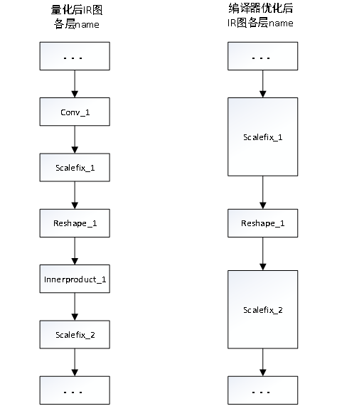
Note
对于融合的算子，因为被融合层指令将会在融合层一起处理，所以被融合层不可被调试； 调试中间层时，编译器应设置–opt-ddr参数为0，防止编译优化导致的结果不一致； 循环算子拆分后的最后一层为reshape，当循环算子后面接reshape/squeeze/unsqueeze算子时，循环算子最后一层reshape会被融合，此时不能对循环算子进行调试； 多输出算子如split因为编译器拆分为多个指令，不支持–debug。
5.9. FAQ
5.9.1. 模拟器仿真的两种format分别在什么时候使用？
【问题描述】
模拟器仿真的format有nchw、nhwc和nhwcstride，三种format分别在什么时候使用？仿真输出的result_x.txt和result_x_hwc.txt应该怎么对应？
【解决方法】
输入数据为(n,h,w,c)格式时可以不指定该参数，默认是nhwc。输入数据为(n,c,h,w)格式时需要指定参数：–format nchw。当用户自己申请inputblobs mem需自行将输入数据转为nhwcstride格式，并指定—format nhwcstride，数据排布相关介绍详见《TS.Knight-SDK使用指南》。
为方便用户根据自己的需要选择，所以输出结果有两种排布nhwc和nchw，result_x_hwc.txt对应的是nhwc，result_x.txt对应的是nchw。
量化平台是onnx，则仿真使用nchw，对比结果使用result_x.txt。
5.9.2. 什么原因会导致编译时间长？
【问题描述】
算子什么情况会导致编译时间较长？
【解决方法】
算子的shape比较大的时候，时间会变长；
某些算子编译时间长，是由于算子的参数配置较大导致的编译处理时间长；
如pooling的kernel或stride参数大于16时，编译器为了适配底层指令，会将pooling算子拆分为许多的global pooling算子来处理，导致编译时间变长，同时编译出来的指令也会多很多。
deconv算子在shape较大和stride参数较大时，编译处理时间会比较长。
如下图，deconv的输入shape为(1,174,12,12)，stride参数为16，输出shape为(1,4,179,179)，编译处理时适配底层指令，会做很多拆分处理，编译时间会比较长。
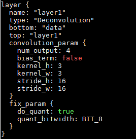
编译的时候使用默认日志级别（error级别 –log-level 3）会减少日志打印，减少编译时间
5.9.3. 模拟器仿真什么时候会处理时间长？
【问题描述】
某些算子仿真非常慢，原因是什么？
【解决方法】
网络较大，编译出来的指令会较多，相应的模拟处理时间也会相对较长。
算子shape较大，为适配底层支持，会对算子做拆分处理，指令也会变多，同时模拟处理较多数据，会导致模拟耗时较长。
示例说明：
如deconv的单算子case，输入shape为(1,1,100,200)， kernel为(11,12)， pad为(6,6)，stride为(2,2)，输出shape为(1,200,197,398)，对应的权重为(1,200,11,12)，单纯计算乘加操作的循环次数为：32（输入channel对齐到32）*11*12*200*398*197， 加上其它适配底层需要的其它指令操作，总耗时较长。
5.9.4. 模拟器仿真结果如何查看？
【问题描述】
仿真结果输出文件格式是什么，如何查看？
【解决方法】
网络模型如果有一个输出，按照输出blobname命名result-blobname_p.txt、result-blobname_hwc_p.txt。如果网络有多个输出，模拟器则会输出每个输出blob对应的一组result文件，每一组以对应的blobname命名。 result文件中会打印输出shape及结果数据。各result文件描述如下：
result-blobname_p.txt是输出张量按照chw顺序排列数据，十进制表示的数据。result-blobname_hwc_p.txt是输出张量按照hwc顺序排列的数据，十进制表示的数据。
2. 使用_d和_r版本仿真输出的结果是一样的。区别在于，使用_d版本仿真输出result文件中会打印layer name，使用_r版本不会打印layer name。如果网络有多个输出，可使用_d版本仿真，比对结果时可根据layer name来一一对应。
5.9.5. 模拟器输入的.bin资源如何生成？
用户训练NN模型时，train data一般需先经过一系列前处理，比如图片数据会经过crop，resize，totensor等操作，之后才输入给NN模型进行训练。
同样，在量化NN模型时，quant data也要经过与训练时相同的前处理，才能正确进行量化。
在测试NN模型时， test data也要经过与训练时相同的前处理，才能进行正确推理。
在使用Knight-RNE模拟器推理时，test data也要经过相同的前处理，且将前处理后的data保存为二进制.bin格式。比如: 假设前处理后的数据为numpy格式的”data” tensor，dataType为”float32”，则可以使用data.tofile(“input.bin”)直接保存为float32类型的.bin数据。上述流程示意如下图：
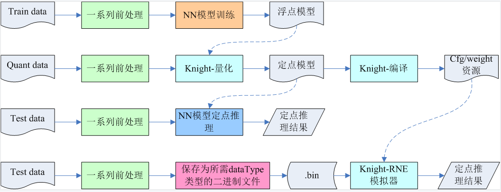
5.9.6. 如何正确设置编译器–output参数值？
【问题描述】
执行编译命令，使用–output参数时，指定IR模型中的blob_name，有时会出现blob_name不存在的错误提示，为何会产生错误？如何正确设置–output参数值？
【问题原因】
编译器处理IR模型时，会对一些算子进行合并操作，被合并的算子以及算子相关的输出blob会被删除，如果–output指定参数是被删除的blob_name，会出现找不到blob_name的报错。
【解决方法】
执行编译器命令时用–log-level 0指定debug级别日志。
从IR中获取想要作为输出算子（假设名为operator）以及其输出blob（假设名为out_blob），然后在编译器的log文件中查找out_blob，如果能找到，将out_blob作为–output的参数。
如果找不到out_blob，则在log中查找算子名operator，若能找到，则将该算子的output blob name设置为–output的参数。
如果out_blob和operator在编译器log文件里面都找不到，建议将–output参数设置为其他算子的输出blob_name。
5.9.7. 编译器–transformer-opt使用场景？
【问题描述】
什么场景下使用编译器–transformer-opt参数？
【解决方法】
针对batch_size为1的swin_t网络，网络中有大量连续的reshape与permute（如下图所示），此时将transformer-opt选项打开，并设置input-order为nhwc时，会提升网络的执行效率。
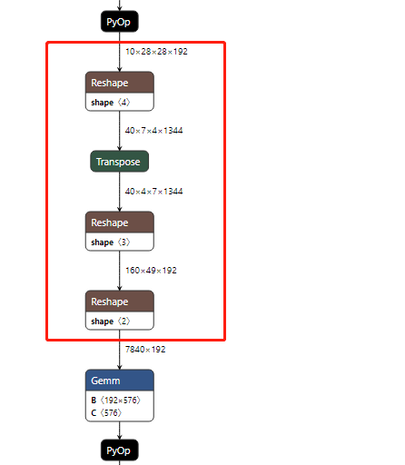
5.9.8. 编译器设置-sln/-eln注意事项
【问题描述】
使用编译器-sln/-eln参数需要注意什么？
【解决方法】
设置-sln/-eln时，需要满足以下条件
起始节点和结束节点中间无分支
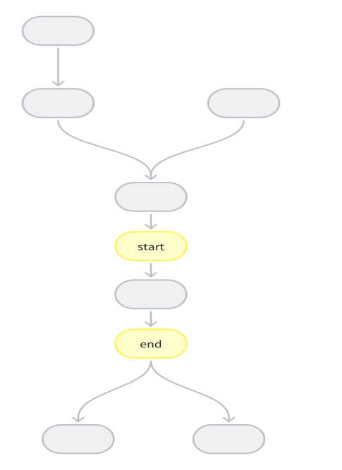
2. 起始节点和中间节点中间分支可闭环
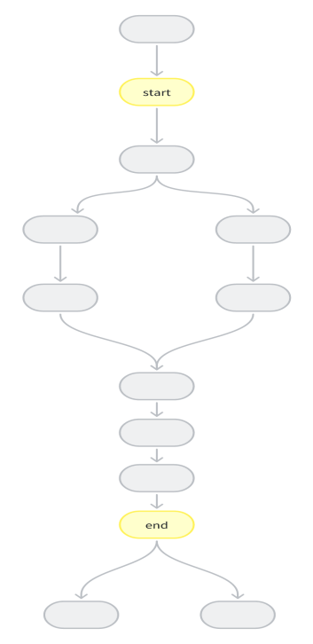
起始节点和中间节点中间分支不可闭环情况：
-sln与-eln指定算子节点子网范围内，存在多输出算子，部分输出在子网内，部分输出在子网外
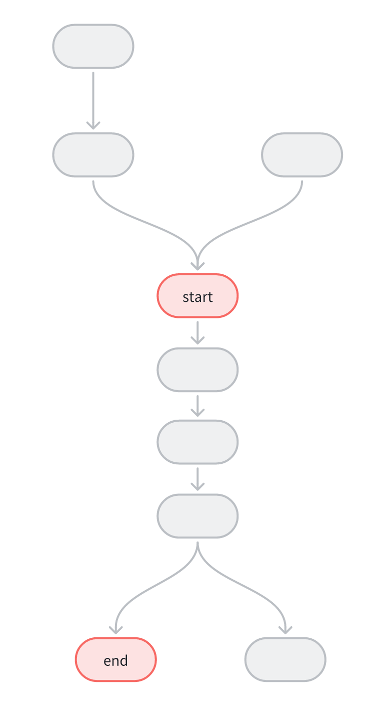
-sln与-eln指定算子节点子网范围内，存在多输入算子，部分输入在子网内，部分输入在子网外

5.9.9. 编译器 –input-order使用限制？
【问题描述】
编译器的–input-order参数在什么场景下使用？
- 【解决方法】
--input-order默认是nchw参数，仅在clip模型或swin_t模型时可以使用--input-order nhwc选项。